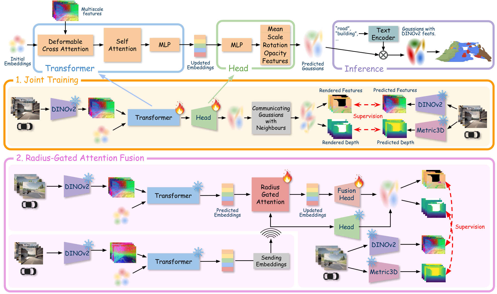

Paper Analysis
01 · What Is Predicted and What Is Shared
语义占用预测同时回答某个体素是否被占据、被什么类别占据。它与表面点云精度、渲染图像质量是不同任务，不能用一个占用 IoU 替代所有重建指标。CoGaussian 的输入是多车相机图像及用于坐标投影、跨车转换的标定与位姿信息，输出可转成语义占用的高斯集合。
每个高斯含中心 μ、尺度 s、旋转 r、不透明度 α 和 DINOv2 特征 f。高斯内部的 f 是视觉基础模型特征，不是直接预测的十二类 one-hot。测试时用 Talk2DINO 将文本映射到兼容空间，再和高斯特征比较得到类别分数。
这里有两个不同空间：Transformer embedding q 是用于更新、通信和参数预测的内部状态；高斯特征 f 是 head 输出、接受二维教师监督并用于语义查询的属性。把这两者都称为语义 token 会遮蔽融合实际发生的位置。
Paper Analysis
02 · Following the Original Architecture

Om Shivam Verma, Shaya Farahmand, Lingjun Zhao, and Lu Gan · Original figure, unmodified · arXiv non-exclusive distribution license; limited reproduction for scholarly commentary, not a CC license · Paper & Caption ↗
图 2 顶部从随机 embedding 开始，同时在图像上随机采样位置。Metric3D 的插值深度结合相机内参和外参，把位置投到三维；deformable attention 根据二维参考点读取多尺度图像特征，再经 self-attention 和 MLP 更新 q。
Gaussian Head 预测中心偏移、尺度、不透明度和 DINOv2 特征。中心随层迭代更新。虽然参数列表和图中包含旋转，正文说明旋转固定为相机坐标系轴对齐，不作为可学习量；这会限制对任意方向薄表面的拟合。
橙色区域是联合训练：将所有相机预测的高斯转换到公共坐标系并聚合，渲染回每个能看见它们的相机。一个只在来源视角合理、在另一个视角错误的预测就可能受到惩罚。它改变了训练监督的可见范围，而不只是推理时多传一些点。
紫色区域是第二阶段：邻车发送 embedding 和中心，自车通过局部注意力得到更新后的 embedding，再用 Fusion Head 预测自车高斯。邻车高斯仍由已训练的原 Head 产生；最终集合包含更新的自车高斯和邻车高斯。它不是把每组邻居压成唯一物理表面或删除所有重复高斯。
Paper Analysis
03 · Where Feature Supervision Can Affect Geometry
训练把高斯渲染的深度与 Metric3Dv2 深度对齐，把渲染的特征与 DINOv2 特征对齐。监督来源是二维基础模型预测，不是三维语义标注；教师错误和单目深度误差仍可能传入结果。
下面是解释性渲染表达，不是论文额外提出的 loss：某个像素特征 F̂(p)=Σ_i w_i(p;μ,s,α)f_i。特征误差既可通过 f_i 改变语义属性，也可能通过合成权重影响 μ、s、α。若移动高斯会改变它对错误像素的贡献，那么特征监督有潜在几何梯度路径。
但“存在梯度路径”不等于“语义已经单独改善几何”。深度监督、跨相机观测、联合训练和融合模块同时变化，论文没有提供移除特征损失、其他设置完全不变的几何对照。其结果支持协作训练策略，不足以隔离语义监督的独立因果作用。
第一阶段训练 Transformer 与 Gaussian Head；第二阶段冻结它们，只训练半径门控注意力和 Fusion Head。因而第二阶段误差可以改善融合与新预测头，却不会继续改写冻结的旧 Transformer 参数。本次依据论文训练说明，未核查运行代码中的 detach 分支。
Explanatory rendering form: F_hat(p) = sum_i w_i(p; mu_i, s_i, alpha_i) f_i dL_feat / dmu_i = (dL_feat / dF_hat) (dF_hat / dw_i) (dw_i / dmu_i) A differentiable path is not an isolated causal result.
Paper Analysis
04 · Local Attention Does Not Establish Instance Identity
邻车中心先转到自车坐标系。每个自车高斯找 k 个欧氏最近邻，再用半径 ρ 排除过远候选。Query 来自自身 q_i，Key 和 Value 则来自邻车 q_j、相对位置 Δμ 和位置编码的拼接。网络学习在这些几何局部候选中取信息。
注意力分数经 softmax 后乘半径 mask，再重新归一化；epsilon 避免分母为零。聚合向量经 MLP、缩放后残差加回 q_i。空间近邻约束降低无关区域参与的机会，但相邻不同物体仍可能混合，位姿误差也可能让正确候选落在半径外。
论文正文没有给出足够的 k、ρ、λ 扫参或通信量、端到端推理延迟结果，实时优化被列为后续工作。因此不能只因使用稀疏高斯就认为通信和延迟已达到部署要求。公开论文未给出可核实的实现链接，本次检索也未定位到作者官方代码仓库。
z_ij = concat(q_j, mu_j − mu_i, PE(mu_j − mu_i)) a_ij = dot(Q_i, K_ij) / sqrt(d) w_ij = softmax(a_ij) M_ij / [sum_r softmax(a_ir) M_ir + epsilon] q_updated_i = q_i + lambda psi(sum_j w_ij V_ij)
Paper Analysis
05 · The Strongest Evidence Is the Failed Concatenation Baseline
Semantic-OPV2V 是模拟多车数据，每场景 2–7 个 agent，每车四个相机。评估区域 40×40×3.2 m，网格 100×100×8，体素边长 0.4 m，共十二个语义类。测试还加入表示 free space 的文本类别。
每相机使用 1200 个 Gaussian queries。单视角训练 6 epochs，联合场景训练再进行 3 epochs，融合阶段再训练 3 epochs；使用单 A100，论文报告各训练运行耗时 8–14 小时。所谓 zero-shot 不能理解为整个系统从未在数据上训练：不使用三维类别监督，与完全不训练是不同条件。
最清楚的证据是直接拼接下降：单车 IoU/mIoU 为 20.58/6.26，直接聚合变成 16.13/4.81。共同渲染监督后达到 22.54/6.74；注意力融合为 22.57/6.95。后者对联合训练仅增加 0.03 点占用 IoU 和 0.21 点 mIoU，不能把主要进步都归给复杂融合模块。
类间表现混合：注意力版本相较联合训练，sidewalk 从 13.62 到 17.29，而 vehicles 从 15.39 到 14.24。总体语义 mIoU 仍较低；有三维真值监督的闭集方法只适合作为背景参照，不是公平的同监督比较。
定性图显示部分遮挡外区域被补出，同时高斯可能产生膨胀的体积而非薄表面。论文将其与稀疏表示、二维监督偏向大图像区域联系起来。没有误差条和语义损失独立消融时，应把这项工作视为范围有限的协作可行性实验。
| Variant | Occupancy IoU (%) ↑ | Semantic mIoU (%) ↑ | Change |
|---|---|---|---|
| Single-agent GaussTR | 20.58 | 6.26 | 基线 |
| Zero-shot concatenation | 16.13 | 4.81 | 直接增加邻车高斯退化 |
| Joint training | 22.54 | 6.74 | 跨相机共同监督 |
| Radius-gated attention | 22.57 | 6.95 | 局部 embedding 融合 |
Paper Analysis
06 · Implications for Semantic Streaming Reconstruction
对 LingBot-Map 最直接的启发是监督一致性：历史或邻视角信息在写入/使用前，需要接受当前任务的约束，而不是认为更丰富的语义特征天然有用。可学习融合应与简单拼接、同容量视觉融合比较，才能证明融合机制带来收益。
另一个启发是明确梯度入口。如果未来采用语义高斯输出，可在渲染特征上加教师对齐，再检查它是否回传到几何与共享状态。但 CoGaussian 的 q 是空间高斯 query，并非 LingBot-Map 的历史 KV；将多车空间融合迁移到时间缓存还需要处理时序、动态和位姿误差。
可验证的研究问题应是：同输入、同预算、同几何损失下，加入写入前语义以及其监督，是否改善后续帧几何。CoGaussian 提供了机制参考和失败基线，尚不能代替这一实验。
Discussion
Reading Questions
Is DINOv2 itself the text encoder?
不是。高斯预测 DINOv2 视觉特征，测试使用 Talk2DINO 对齐后的文本表示进行比较。
Why can simple concatenation hurt?
多相机预测可能空间不一致、尺度不同或覆盖重复区域；加入观测并没有自动解决这些冲突。论文的拼接基线确实下降。
Does feature supervision necessarily improve geometry?
不一定。可微渲染提供潜在梯度路径，但网络也可能只调整特征；必须用控制实验确认几何收益。
Is this a temporal memory method?
不是。核心是多车同场景协作，论文没有验证固定容量时间缓存或长序列遗忘。
References
One original method figure is included for scholarly analysis. First-submission dates are distinguished from the reading version. Results are author-reported; no local reproduction has been performed.
Verified on 2026-11-01. Paper results refer to the linked versions. Repository references were checked on this date.